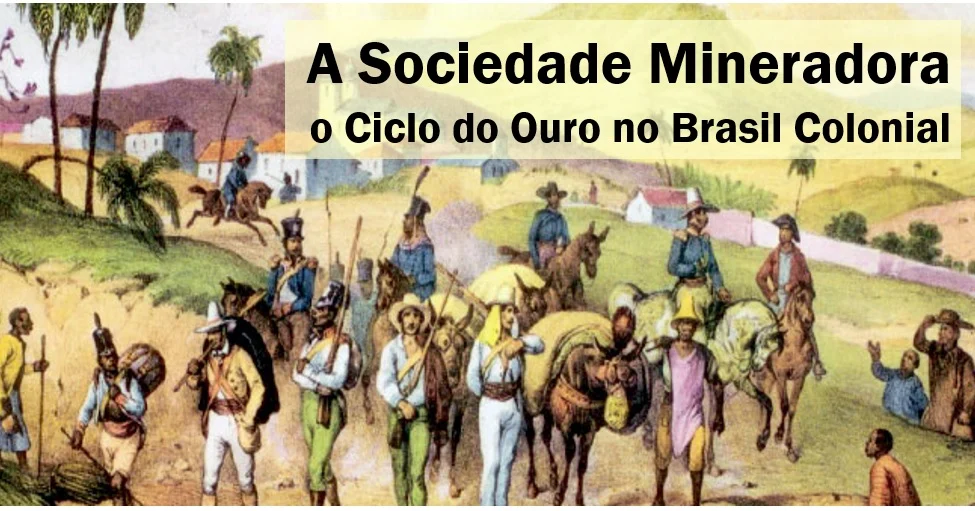

No século XVIII, a descoberta de jazidas de ouro e diamantes em Minas Gerais transformou profundamente o Brasil Colônia, deslocando o eixo econômico do litoral açucareiro do Nordeste para o interior.
Com o acúmulo de riquezas, floresceu a arte sacra com o Barroco Mineiro. Nomes como Aleijadinho (escultura/arquitetura) e Mestre Ataíde (pintura) marcaram a cultura do período.
Para garantir impostos e combater o contrabando, a Coroa criou as Casas de Fundição, cobrou o Quinto (20%) e impôs a ameaçadora derrama, gerando revoltas como a Inconfidência Mineira.
Questão 1
A descoberta de ouro no interior da
colônia brasileira no século XVIII resultou essencialmente em:
A) Uma sociedade exclusivamente rural e isolada.
B) Um processo
acelerado de interiorização do território, surgimento de vilas urbanas e
maior dinamismo comercial interno.
C) A extinção imediata de todo o
trabalho escravizado.
D) A abolição do Pacto Colonial.
Questão 2
O endurecimento da fiscalização
metropolitana (quinto, casas de fundição e derrama) sobre Minas Gerais
teve como principal objetivo direto:
A) Financiar a industrialização e a reforma agrária colonial.
B)
Garantir a arrecadação tributária da Coroa e combater o intenso
contrabando e a sonegação de ouro.
C) Conceder autonomia política
total a todos os trabalhadores.
D) Estimular práticas liberais de
livre mercado.